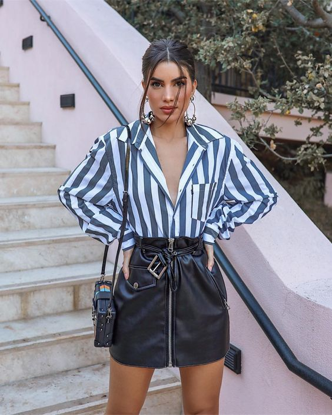
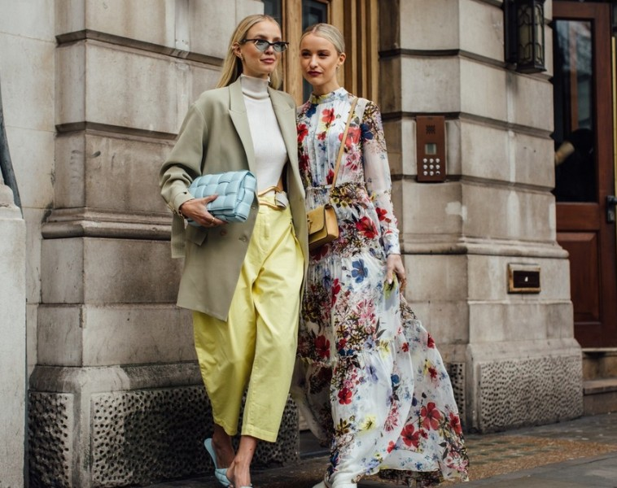
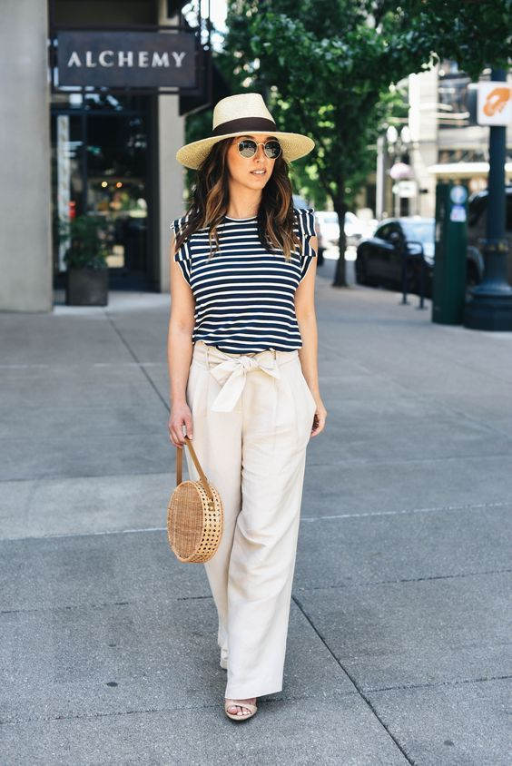

Мода во есен
Класичните есенски модели се носат од година во година, па затоа и ни се исплати да вложиме во нив. Квалитетните парчиња облека ќе направат вашиот стил да остане свеж и впечатлив, дури и по неколку години. Па, доколку сакате да бидете безгрешни при комбинирање на есенските трендови, еве во кои модели треба да инвестирате.
Добриот капут одлично се комбинира со сите есенски модни комбинации. Неговиот строг крој и должината ви овозможуваат моќен и впечатлив изглед, додека истовремено ќе ви даде и елеганција и префинетост.
Не мора да бирате само црно кожно здолниште, можете слободно самите да ја одберете бојата. Ако се решите за нешто повесело, оваа сезона доминираат белите и маслинесто зелените кожни здолништа.
Чизмите до глуждови се популарни секоја есен и одлично се вклопуваат во сите модни комбинации. Можете да си играте со боите и дезените, а оваа година најпопуларни се црните и белите модели.
Како што поминува есента, така сè повеќе комбинираме бои во природни, земјени бои кои покрај тоа што се класика, оваа година се и во тренд. Темно кафената боја е идеална за зимските месеци, но овој пат таа се издвојува и во есенските колекции. Таа доминира на светските модни писти како и во уличната мода, каде што можете да видите многу џемпери и волнени капути во оваа нијанса. Но дефинитивно најинтересни се темнокафените панталони, кожните фустани и капутите во таа боја.
Мода во зима
Зимата губи од својата сила. Но, пред да ѝ кажете „збогум“, преостануваат шест седмици во кои сè уште имате шанса да нурнете во зимската гардероба и да склопите модни комбинации кои гласно ќе зборуваат за вашето чувство за стил, а притоа ќе сведочат за вашата информираност за најактуелните трендови. Денес правилата изумираат во светот на модата, а сè почесто трендовите се создаваат токму на улиците од лицата кои умеат да се изразуваат преку облеката и не си ја ограничуваат фантазијата. Модните блогерки имаат сè поголемо влијание во модната индустрија. Нивното мислење одекнува во ушите на креаторите и стилистите, а нивниот стил фасцинира и инспирира. Па, време е да го пренасочиме вниманието од манекенките и модните писти кон младите дами кои неуморно изненадуваат со комбинации што веднаш го зграбуваат погледот. Низ зимскиот моден избор на славните блогерки невозможно е да не се забележат неколку силни трендови

Бургундска пријатна шамија идеално ќе се вклопи во крем -сив плетен пуловер. Оваа студена сезона е полна со пријатни и удобни парчиња за слоеви. Јас сум толку в loveубена во плетените плетенки и начинот на кој тие можат да се вклопат во вашата секојдневна облека, вклучувајќи кожна јакна и пријатни палта. С Everything изгледа шик и безвременски модерно. Се на се, има многу нови трендови што треба да ги пробате и јас сум возбуден што ќе ви ги покажам некои од моите омилени.
Мода во пролет
Oмиленото годишно време за многумина започна. Пролетта е идеална за ослободување од тешките зимски парчиња облека кои полека веќе ги пакуваме од нашите гардеробери. Речиси секоја девојка и жена се наоѓа во конфузија што да облече во ваков преоден период од зима кон пролет, а ние во продолжение ви нудиме седум модни совети за тоа кои парчиња да станат најпрактичните за комбинирање, кои притоа ќе ви овозможат модерен и тренди изглед. Модниот свет веќе е преокупиран со пролетните модни трендови, а љубителките на модата веќе се „зафатени“ со спојување на најинтересните дизајни, бои и форми. Како и секоја измината година и оваа исто така носи нови модни трендови, затоа вие букирајте што е најдобро за вас и бидете во тек со она што е „ин“ за оваа пролет.
Основните парчиња што овој период треба да ви бидат први при рака се таквите од тантела, цветни принтови и многу детали. Експериментирајте со лелеавите здолништата и фустани во А крој, а притоа не одете предалеку од едноставноста. Голем хит се панталоните со широки ногавици кои ве советуваме да ги комбинирате со едноставни памучни маички, кошули, кои пак од друга страна ќе ви дадат и елегантен изглед. Охрабрете се и во однос на боите, извадете ги сите лесни пастелни парчиња и почнете да ги правите вашите омилени пролетни стајлинзи.
Мода во лето
Како што се зголемуваат температурите и деновите, така нашите мисли патуваат на песочните плажи на кои ќе уживаме ова лето. Без разлика дали ќе се сончате на тропски остров, покрај базен или на некоја блиска плажа, сигурно сакате да бидете во чекор со моменталните трендови.
„Веќе го видовме“, ќе речат оние над триесет. 2000-тите се враќаат во мода со низок пораст, гол стомак, тесна форма, дополнителни мини здолништа, штрасови, комплициран смешен крој. Но, трендовите пролет-лето 2022 година се одликуваат и со модерни трендови - светки, исечоци на неочекувани места, злато, ромбови, пердуви и долги ракави. На ревиите жените беа поделени во два табора, некои се неверојатно секси, други тешко се разликуваат од мажите. Некои дизајнери го покажуваат женското тело во сиот негов сјај, други целосно го бришат полот во облеката